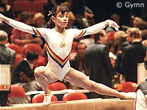

Laura Cutina (ROM)
1984 Olympic Team Gold Medalist

|
Medal Total
- Olympic Games: 1 Gold
- World Championships: 2
Silver
|
Laura was born on September 12,
1968, in Bucharest. She was a member of Dinamo Bucharest but trained with
the national team in Deva. Her coaches were Adrian Goreac and Maria Cosma.
Competition Results
- 1983
- Catania Cup: 5th AA
- GBR-ROM Dual Meet: 1st Team, 3rd AA
- Hit Parade of Rome: 3rd UB
- HOL-ROM Dual Meet: 1st Team, 5th AA
- ROM Nationals: 3rd AA
- World Championships (Budapest): 2nd Team,
9th AA
-
- 1984
- American Cup: 2nd AA
- Intl. Mixed Pairs: 4th Team
- Olympic Games: 1st Team, 5th AA, 8th
FX
- Ontario Cup: 4th AA
- Romanian Cup: 1st AA, 1st UB
-
- 1985
- Dynamo Spartakiade: 6th AA
- European Championships: 7th V, 11th AA
- FRA-ROM-SUI Tri-Meet: 1st Team, 8th AA
- HOL-ROM Dual Meet: 1st Team, 9th AA
- International Championships of Romania: 3rd AA
- World Championships (Montreal): 2nd Team
-
- 1987
- HUN International: 6th AA, 2nd V
University Games: 2nd Team, 13th AA
-
This page was last updated on October 18, 2000.
© Gymn Forum